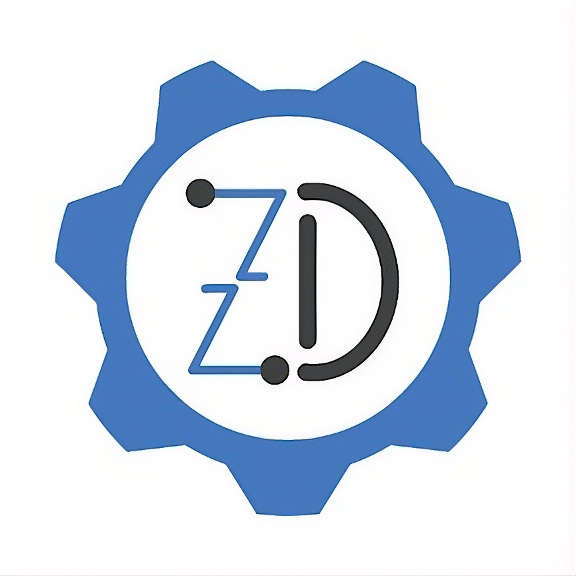

Zona DigitalEspecialistas en reparación de consolas, laptops y micro-soldadura en la CDMX. Más de 15 años de experiencia técnica y más de 20 años en ingeniería electrónica.
Envíanos un WhatsAppReparación de PS5, Xbox Series y Switch. Solución a problemas de video, encendido y mantenimiento preventivo.
Reparación de placas base a nivel componente, reballing en APU, cambio de puerto HDMI, y sustitución de circuitos integrados.
Diagnóstico avanzado de laptops y equipos de alto rendimiento. Optimización de hardware y software.
Av. México 1322 (Esquina Francisco Villa), Colonia La Guadalupe, La Magdalena Contreras, C.P. 10820, CDMX